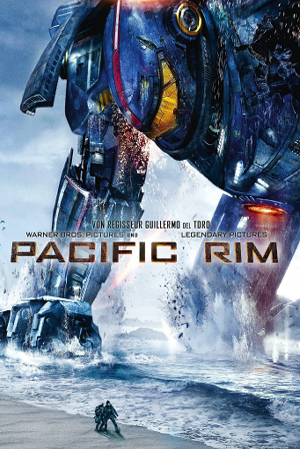

Pacific Rim (2013)
(re)watched 7 nov 2026

My story with pacrim happened to be quite…rocky. I’ve seen quite a lot of discussions of the movie (very positive ones specifically) when I was in, mm, middle school, I guess, and Lots Of ship art of newmann (which also looked very cool)? So basically all I knew about the movie was those two characters and that people say good things about it. Few notes about me back then a) I was not the most attentive viewer, objectively, and commonly watched stuff more or less on a background while doing something else b) I was very funnily from my current perspective passionate about liking And disliking certain characters, and my disliking was veeeery often based of is a character a good/redeemable person due to my moral compass or not (and also based of how they treat characters I like) c) It was probably the first ever Guillermo del Toro I saw and I didn’t really know what the genre was, so no, I didn’t know what to expect (a bit silly and anime-esque but at the same time quite cool concept-wise and Obviously epic combats between mechs and kaijus) and where to look (at absolutely rad practical effects because hello wdym the tiny bug parasites were ANIMATRONICS??). Uh, and I was that person who was like >:с that's stupid and doesn't make sense >:с (honey the very first line of the movie was about the ALIEN PORTAL SOMEWHERE IN THE DEPTHS OF PACIFIC OCEAN, just accept the what if gimmick and enjoy the ride) so yeah I didn't hate the movie but didn't get the hype either, to me it was a forgettable a-okay kinda story. Another funny shit: god I hated Hermann Gottlieb's guts for being >:с mean to his colleague! But I did enjoy the whole drift thing and I really liked Mako (so my taste wasn't completely absent, mind you /j)
But, well, recently I've remembered about my experience with the movie and (fairly) assumed I didn't do justice to the movie as a kid. And specifically I wasn't fair for disliking always bickering scientists and TOOK SIDES for some reason although right now I enjoy clashing personalities and conflicts and human imperfections in general is something I'm wayyy more okay with, especially in fiction. So, I've rewatched Pacific Rim and oh my god it was Such a good idea to give it a second chance!
Not my top favorite movie (I'm very picky ✊), but I sincerely enjoyed watching it! I'd even say this is probably my favorite Guillermo del Toro movie so far (which doesn't tell much as I'm not super well-versed in his filmography, not yet). Awesome cinematography, great work with creating the sense of scale, neat practical effects. The idea of few pilots in mech whose effectivity depends directly on their mental stability in the moment and cooperation skills and enough trust to let this other person walk through your mind and to see the most vulnerable and traumatic moments of your life is something I liked then and like very much still. Like, yep, anime to the core, but so is the whole mech genre and it's just cool so genuinely who cares. And, oh, I really appreciated that all the action aside, the story is about humanity and how beautiful it might be when busy with something but destroying itself, and about love in a broad sense.
The rewatch didn't get me into newmann still, but I do see the vision now. It was so hilarious (and genius) to give colleagues a messy old married couple from melodramas kind of dynamic, so fun to watch, sincerely! Speaking of stuff the rewatch actually got me into. I wonder what did they add to Mako and Raleigh's dynamic to make me So hooked from the very first scene they interacted. I mean, well, I already stated by pretentious ass is picky with the stories, but I'm even more picky with character dynamics, especially romantic dynamics, and Especially in films (opposed to multi-episode format here which has more time and possibilities to create the chemistry and meaningful context between characters). But ohhhh I did care about them so much. And the fact they didn't have a kiss scene honestly Rocks, both because the platonic reading of their relationships works awesome as well and because no kiss ever could possibly feel more powerful in the final scene than what they had was. Poetic cinema.
/ last upd. 8 oct 2026